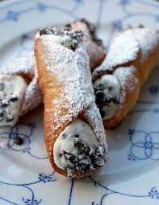

Main Course


These are some of the most famous foods in Europe.
From the left we have the food everyone knows which is pizza and pasta. There are many flavors that everyone ejoys. Next we have Moussaka is an eggplant- or potato-based dish, often including ground meat. Last, we have Arancini are stuffed rice balls which are coated with bread crumbs and then deep fried.
Dessert&Drinks
These are some of the most well known and the best desserts in Europe.
The first item is Slovenian potica which is a nut roll and a traditional festive pastry from Slovenia. The next one is a Belgium waffle which everyone enjoys in the mornings or during anytime of day. Next, we have creme brulee which is a very sweet dessert enjoyed by many. The last one we have is cannoli is a dessert where you can enjoy famously in new york but originally from Italy.
Some info: Europe
Europe, second smallest of the world’s continents composed of the westward-projecting peninsulas of Eurasia (the great landmass that it shares with Asia) and occupying nearly one-fifteenth of the world’s total land area.
Population
741.4 million